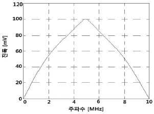

초음파비파괴검사기사(구) (2013-08-18 기출문제)
1과목: 초음파탐상시험원리
1. 물질내를 통과하는 초음파의 속도는 다음의 어느 것에 주로 의존하는가?
- 펄스폭
- 주파수
- 탐촉자의 지름
- 음이 통과하는 재질
(정답률: 알수없음)

2. 초음파탐상시험시 깊이가 깊은 결함을 분해하려면 다음 중 무엇에 가장 영향을 많이 받겠는가?
- 탐촉자의 직경
- 주파수
- 입사각
- 탐촉자의 초점거리
(정답률: 알수없음)
3. 초음파탐상검사에서 불연속의 검출도와 모두 관련 있는 인자는?
- 감도, 분해능, 잡음 식별도
- 감도, 음향임피던스, 투과력
- 감도, 불감대, 지향각
- 분해능, 잡음 식별도, 지향각
(정답률: 알수없음)
4. 진동자로 사용키 위해 수정을 Y-cut 했을 경우 파형은?
- 종파
- 횡파
- 판파
- 종파 및 횡파
(정답률: 알수없음)
5. 곡면 음향렌즈의 곡률반경이 증가하면 렌즈의 초점거리는 어떻게 변하겠는가?
- 곡률반경과 초점거리는 비례한다.
- 곡률반경과 초점거리는 반비례한다.
- 초점거리는 곡률반경의 제곱근에 비례한다.
- 초점거리는 곡률반경의 제곱근에 반비례한다.
(정답률: 알수없음)
6. 초음파를 저강도 초음파와 고강도 초음파로 구별할 때 다음중 무엇으로 결정하는가?
- 진폭
- 속도
- 파장
- 주파수
(정답률: 알수없음)
7. 가열양극 할로겐법의 특징을 설명한 것 중 틀린 것은?
- 기름에 막혀있는 곳의 누설을 검출할 수 없다.
- 스니퍼 튜브 통과시간에 따라 응답시간이 길어질 수 있다.
- 인화성 재질이나 폭발성 대기근처에서 사용하면 위험하다.
- 할로겐 추적가스에 장시간 노출되면 누설신호가 사라질 수있다.
(정답률: 알수없음)
8. 누설에 사용되는 기본 단위 중 1atm 에 해당되지 않는 것은?
- 14.7 psi
- 760 torr
- 760 ㎜Hg
- 1013 kPa
(정답률: 알수없음)
9. 분말야금법에 의하여 제조된 다공성(porous) 재질의 표면 검사에 가장 적합한 비파괴검사법은?
- 자분탐상검사법
- 입자여과검사법
- 와전류탐상검사법
- 질량분석누설검사법
(정답률: 알수없음)
10. 단조품의 내부결함 검출에 가장 적합한 비파괴검사법은?
- 자분탐상시험법
- 초음파탐상시험법
- 침투탐상시험법
- 와전류탐상시험법
(정답률: 알수없음)
11. 결함의 형상을 육안으로 판단할 수 있어 해석이 용이한 비파괴검사법만으로 조합된 것은?
- 방사선투과검사, 자분탐상검사
- 초음파탐상검사, 침투탐상검사
- 와전류탐상검사, 자분탐상검사
- 와전류탐상검사, 침투탐상검사
(정답률: 알수없음)
12. 다음 중 비파괴검사의 종류와 그 특성을 연결한 것으로 틀린 것은?
- 음향방출시험 - 동적 결함검사
- 와전류탐상시험 - 전도체의 표면검사
- 전자초음파공명법 - 고온재료의 접촉검사
- 핵자기공명 단층영상법 - 수소원자핵의 분포를 영상화
(정답률: 알수없음)
13. 와전류탐상검사에서 가장 흔히 사용되는 전기 파형은?
- 구형파
- 삼각파
- 사인파
- 톱니파
(정답률: 알수없음)
14. 침투탐상검사의 특징을 설명한 것 중 옳은 것은?
- 자성 재료에만 적용할 수 있다.
- 표면이 열려 있지 않아도 결함 검출이 가능하다.
- 1회의 탐상조작으로 시험체 전체를 탐상할 수 있다.
- 표면이 거친 시험체나 다공성 재료의 결함 검출에 우수하다.
(정답률: 알수없음)
15. 가시광선이나 X선 또는 ɤ선에 노출되면 훌륭한 전기도체가 되는 원리를 이용하여 셀레늄(selenium)판에 시험체의 상을 기록하여 건식현상 처리하는 방사선투과시험은?
- 자동 방사선투과시험
- 제로 방사선투과시험
- 입체 방사선투과시험
- 실시간 방사선투과시험
(정답률: 알수없음)
16. 다음 비파괴검사법 중 강판의 도금두께 측정에 적합한 것은?
- 방사선투과검사
- 초음파탐상검사
- 침투탐상검사
- 와전류탐상검사
(정답률: 알수없음)
17. 자연광에서 모든 색은 사람의 눈에 각기 밝기가 틀리게 보이는데 밝기가 동일할 때 가장 쉽게 발견 될 수 있는 색은?
- 빨간색
- 황록색
- 청색
- 자주색
(정답률: 알수없음)
18. 납 용기나 철 케이스 내에 들어 있는 물질의 양을 검사하는 데 효과적인 비파괴검사법은?
- 누설검사
- 침투탐상시험
- 초음파탐상시험
- 중성자투과시험
(정답률: 알수없음)
19. 자분탐상시험은 자분모양에 의해 불연속을 검출하므로 자분모양의 식별성은 중요하다. 이 자분 모양의 식별성을 향상시키기 위하여 고려할 사항이 아닌 것은?
- 식별성은 백그라운드와의 대비에 의해 좌우되므로 형광자분을 사용할 때는 형광휘도가 낮은 것을 선택하여 사용하여야 한다.
- 불연속부에 충분한 양의 자분이 흡착되도록 가능한 한 균일하게 자분을 적용해야 한다.
- 적절한 자화로 불연속부로부터 충분한 누설자속이 얻어지도록 해야 한다.
- 관찰하기 편리한 환경에서 눈과 시험면의 거리를 두고 바른 관찰을 해야 한다.
(정답률: 알수없음)
20. 방사선투과검사로 얻을 수 있는 결함 정보 중 정밀도가 가장 높은 것은?
- 결함의 면적
- 결함의 깊이
- 결함의 길이
- 결함의 체적
(정답률: 알수없음)
2과목: 초음파탐상검사
21. 초음파탐상시험시 동일한 크기의 탐촉자에서 주파수를 증가시켰을 때 예상되는 결과는?
- 초음파 빔의 분산이 증가한다.
- 근거리 음장이 증가한다.
- 분해능이 저하된다.
- 파장이 길어진다.
(정답률: 알수없음)
22. 같은 크기의 결함이 시험체내에 있는 경우 초음파탐상시험으로 가장 발견되기 쉬운 결함은?
- 구형의 결함
- 다른 원소의 개재물
- 초음파의 진행 방향에 평행으로 있는 결함
- 초음파의 진행 방향에 직각으로 넓게 있는 결함
(정답률: 알수없음)
23. T형 용접부에서 개선면이 되어 있지 않은 쪽은 라멜라테어링은 어떻게 검출하면 좋은가?
- 반대면에서 45도 경사각탐촉자로 검사한다.
- 반대면에서 60도 경사각탐촉자로 검사한다.
- 반대면에서 수직탐촉자로 검사한다.
- 개선면에서 45도 경사각탐촉자로 검사한다.
(정답률: 알수없음)
24. 일반적으로 용접된 판에 용접선과 평행한 불연속을 검출하는데 가장 좋은 초음파탐상시험은?
- 표면파를 이용한 경사각 접촉법
- 종파를 이용한 수직접촉법
- 표면파를 이용한 수침법
- 횡파를 이용한 경사각법
(정답률: 알수없음)
25. 오스테나이트계 스테인리스강의 초음파탐상시험에 대한 설명으로 틀린 것은?
- 오스테나이트계 스테인리스강이나 9% 니켈강에서 모재 및 열영향부에서 발생한 결함은 횡파 경사각탐상으로 검출이 가능하다.
- 오스테나이트계 스테인리스강 용접부의 초음파탐상에 있어서 점집속탐촉자나 2진동자 탐촉자는 S/N비의 개선을 위해 이용된다.
- 횡파 경사각탐촉자를 이용하여 오스테나이트계 스테인리스강 용접부를 초음파탐상할 때 의사에코가 나타나는 경우가 있다.
- 오스테나이트계 스테인리스강 용접부내를 종파가 전파 할때 종파 음속은 그 전파방향과 결함의 주 성장방향과는 무관하다.
(정답률: 알수없음)
26. 경사각탐상시 인공대비 반사원으로 측면 드릴구멍(SDH)을 사용하는 이유는?
- 면적진폭을 교정하기 위하여
- 판재의 두께를 교정하기 위하여
- 횡파의 거리진폭을 교정하기 위하여
- 탐촉자의 근거리 분해능을 결정하기 위하여
(정답률: 알수없음)
27. 탐촉자의 분해능과 감도에 영향을 주는 충진재에 대한 설명으로 옳은 것은?
- 탐촉자의 감도를 높이기 위해서는 탐촉자의 진동이 가능한한 빨리 흡음되어야 한다.
- 탐촉자의 분해능을 높이기 위해서는 가능한 한 흡음이 낮아야 한다.
- 흡음재의 음향임피던스가 탐촉자의 재질과 거의 동일할 때 진동자의 흡음이 가장 이상적이 된다.
- 흡음재의 음향임피던스가 탐촉자의 재질과 차이가 많을수록 이상적이다.
(정답률: 알수없음)
28. 용접부를 초음파탐상할 경우 탐촉자 선정시 탐상주파수와 탐촉자의 크기와 관련하여 고려해야 할 내용 중 틀린 것은?
- 탐상속도를 높여야 할 때에는 고주파수의 큰 탐촉자를 사용한다.
- 분해능을 높이기 위해서는 고주파수를 이용하여 광대역 탐촉자를 사용한다.
- 탐상면의 거칠기가 클 때에는 낮은 주파수를 사용하여 표면의 산란을 방지한다.
- 시험체의 결정립이 클 경우에는 저주파수를 사용하여 산란에 의한 감쇠를 보상해 주며, 광대역 탐촉자를 사용한다.
(정답률: 알수없음)
29. 초음파 에코의 진폭이 스크린 높이의 20%였는데, 이를 스크린 높이의 100%가 되게 하려면 게인을 얼마나 올려야 하는가?
- 6dB
- 10dB
- 14dB
- 18dB
(정답률: 알수없음)
30. 용접부에 생기는 결함의 종류와 결함의 특징이 틀린 것은?
- 기공 : 용접시 발생한 가스가 대기 중에 나오지 못하여 내부에 구속되어 발생한 결함으로 기공의 형상은 구이며 난 반사를 일으켜 매우 작은 에코를 나타낸다.
- 슬래그 : 용접 중 용접부에 발생한 개재물이거나 피복아크 용접시 용접봉의 플럭스가 원인이 되며 불균일한 형상을 가져 파의 형태로 구분하기 어렵다.
- 융합불량 : 모재와 용접금속 사이, 또는 용접패스 사이에 용융이 적절치 못하여 나타나는 결함으로 주로 비드면 좌우에 발생한다.
- 균열 : 용접시 발생하는 균열은 냉각 속도의 차이에 의하여 발생하며 주로 선형 모양으로 규칙성을 가지며 에코의 크기는 다른 결함에 비해 항상 높다.
(정답률: 알수없음)
31. 집속형 수직탐촉자에 대한 설명으로 옳은 것은?
- 초음파 빔의 강도를 낮추기 위해 음향 렌즈를 부착한 것이다.
- 빔을 집속함으로써 최대 강도점이 진동자 쪽으로 이동하게 되고 유효 범위가 짧아진다.
- 집속된 빔으로 인해 탐상감도를 높이고 큰 불연속의 검출에 유용한 방법이다.
- 초음파 에너지는 한 곳에 집중되지만 집중된 부위 이외에 반사 감도가 더 많이 발생한다.
(정답률: 알수없음)
32. 초음파탐상방법의 종류 중 펄스-반사법에 대한 설명으로 틀린 것은?
- 시험체의 한면을 이용하여 결함을 탐지하여 결함의 크기, 위치를 알아낼 수 있다.
- 1개의 탐촉자 만을 사용하므로 경제적이고 효율적이다.
- 반사파의 에너지는 결함의 크기에 영향을 받으며 초음파의 입사방향과 결함의 방향에도 크게 의존한다.
- 투과법에 비하여 초음파에너지 손실이 작아 탐상 가능한 깊이가 크다.
(정답률: 알수없음)
33. 초음파탐상검사 방법의 선정 시 고려하지 않아도 되는 것은?
- 검사품의 용도
- 검사품의 색채
- 적용하는 규격
- 결함의 방향성
(정답률: 알수없음)
34. 초음파 탐상기의 CRT 스크린 상에 나타나는 에코의 높이는 다음 중 무엇에 비례하는가?
- 음의 압력
- 음의 주파수
- 음향임피던스
- 음의 속도
(정답률: 알수없음)
35. 주파수에 대한 응답곡선이 그림과 같을 때 탐촉자의 밴드폭(band width)은 약 얼마인가?

- 1㎒
- 4㎒
- 7㎒
- 10㎒
(정답률: 알수없음)
36. 초음파 탐상기의 특성을 점검하는 항목 중 가장 중요한 3가지는 무엇인가?
- 증폭의 직선성, 브라운관의 크기, 최대 감도
- 증폭의 직선성, 분해능, 시간축의 직선성
- 증폭의 직선성, 분해능, 최대 감도
- 증폭의 직선성, 시간축의 직선성, 브라운관의 크기
(정답률: 알수없음)
37. 초음파탐상검사시 사용되는 탐촉자의 공진주파수에 대한 설명으로 옳은 것은?
- 탐촉자의 공진주파수에서 최대의 진동이 일어난다.
- 공진주파수는 종파속도에 반비례한다.
- 공진주파수는 진동자 두께에 비례한다.
- 공진주파수는 진동자 두께에 2배에 비례한다.
(정답률: 알수없음)
38. 용접부의 초음파탐상시 기준감도를 초과하는 결함에코가 나타났다. 이 때 주사감도에서 16dB를 감소시켰더니 결함에코의 감도가 기준감도와 동일하게 나타났다. 주사를 기준감도에서 6dB 올려 탐상하였다면 실제 결함에코의 감도는 주사감도의 약 몇 배가 되는가?
- 1.6배
- 3.2배
- 4.8배
- 6.4배
(정답률: 알수없음)
39. 경사각탐상에서 결함을 중심으로 한 원주상을 중심을 향하여 탐촉자를 이동시켜 결함에 대한 초음파 빔의 방향을 변화시키는 주사법은?
- 진자주사
- 지그재그주사
- 목돌림주사
- 두갈래주사
(정답률: 알수없음)
40. 초음파는 결함과의 각도가 얼마일 때 최대 에코를 얻을 수 있는가?
- 45°
- 60°
- 70°
- 90°
(정답률: 알수없음)
3과목: 초음파탐상관련규격및컴퓨터활용
41. 압력용기용 강판의 초음파탐상 검사방법(KS D 0233)에서 자동 경보장치가 없는 탐상장치를 사용하여 탐상하는 경우 탐촉자의 주사속도는 초당 얼마 이상을 초과하지 않아야 하는가?
- 200㎜/sec
- 50㎜/sec
- 100㎜/sec
- 300㎜/sec
(정답률: 알수없음)
42. 강용접부의 초음파탐상 시험방법(KS B 0896)의 탐상장치에 요구되는 성능 중 시간축 직선성은 풀 스케일의 몇 % 이내여야 하는가?
- ±1
- ±3
- ±5
- ±12
(정답률: 알수없음)
43. 보일러 및 압력용기의 재료에 대한 초음파탐상검사(ASME Sec.V, Art.5)에 의해 탐상장치를 교정할 때 스크린높이 직선성은 전체 스크린 높이의 몇 % 이내여야 하는가?
- 1%
- 2%
- 5%
- 10%
(정답률: 알수없음)
44. 보일러 및 압력용기의 재료에 대한 초음파탐상검사(ASME Sec.V, Art.23 SA-388)에서 초음파장치는 8시간마당 최소한 1번의 교정점검을 수행한다. 이득수준의 손실이 몇 %이상 나타나면 재교정전 검사된 모든 재료를 재검사해야 하는 가?
- 5%
- 10%
- 15%
- 20%
(정답률: 알수없음)
45. 알루미늄의 맞대기 용접부의 초음파 경사각 탐상시험방법(KS B 0897)에서 모재 두께가 60㎜일 때 흠 길이가 19㎜이면 흠의 분류는? (단, B종으로 구분된다.)
- 1류
- 2류
- 3류
- 4류
(정답률: 알수없음)
46. 압력용기용 강판의 초음파탐상 검사방법(KS D 0233)에 따른 내부결함 보수시 제거부분의 깊이는 공칭 판 두께의 몇% 이내로 하여야 하는가?
- 10%
- 15%
- 20%
- 25%
(정답률: 알수없음)
47. 보일러 및 압력용기의 재료에 대한 초음파탐상검사(ASME Sec.V, Art.4)에 사용되는 교정시험편은 최소한 어떤 열처리가 행하여진 것을 사용해야 하는가?
- 뜨임
- 풀림
- 불림
- 담금질
(정답률: 알수없음)
48. 초음파 펄스 반사법에 의한 두께 측정 방법(KS B ⑤36)에 의한 두께 측정방식의 종류에 해댱되지 않는 것은?
- 수중 에코방식
- 0점, 제1회 저면 에코방식
- 다중 에코방식
- 표면에코, 제1회 저면 에코방식
(정답률: 알수없음)
49. 보일러 및 압력용기의 재료에 대한 초음파탐상검사(ASME Sec.V, Art.23 SA-388)에 따라 초음파탐상검사를 실시할 때 잘못된 것은?
- 초음파 탐촉자의 경로는 최소 15%를 중첩한다.
- 주사속도는 6in/sec를 초과할 수 없다.
- 원주면과 중공(hollow)단강품은 수직빔을 사용하여 반지름 방향으로 주사한다,
- 원판형 단조품 검사는 수직빔을 사용하여 항상 양쪽평면을 주사하고, 원주를 반지름 방향으로 주사한다.
(정답률: 알수없음)
50. 강관의 초음파탐상검사 방법(KS D 0250)에서 경사각 탐촉자를 사용하는 경우 탐촉자의 두께 대 바깥지름의 비가 5.8%를 초과하고, 20%이하 일 때 사용되는 공칭 굴절각이 아닌 것은?
- 35°
- 40°
- 45°
- 60°
(정답률: 알수없음)
51. 보일러 및 압력용기의 재료에 대한 초음파탐상검사(ASME Sec.V, Art.4)에 따라 용접부 탐상검사에 경사각 탐촉자를 사용할 때 다음 중 일반적으로 이용되는 경사각이 아닌 것은?
- 90도
- 45도
- 60도
- 70도
(정답률: 알수없음)
52. 아크용접 강관의 초음파탐상검사 방법(KS D 0252)에 따라 석유, 가스 등의 수송용 강관을 검사할 때 판정레벨은 다음중 어느 것을 이용하는가?
- S-10 의 에코높이
- D-16 의 에코높이
- D-32 의 에코높이
- N-12.5 의 에코높이
(정답률: 알수없음)
53. 보일러 및 압력용기의 재료에 대한 초음파탐상검사(ASME Sec.V, Art.23 SA-435)에 따라 두께가 13㎜이상인 압력용기용 강판을 수직탐촉자로 검사할 때 건전부 반대면에서의 저면반사높이가 얼마가 되도록 설정하는가?
- 전체스크린 높이의 80%
- 전체스크린 높이의 50%
- 전체스크린 높이의 20%
- 제1회 저면 에코높이의 1/2
(정답률: 알수없음)
54. 보일러 및 압력용기의 재료에 대한 초음파탐상검사(ASME Sec.V, Art.5)에서 규정하고 있는 탐상장치의 점검과 교정 시기가 잘못 설명된 것은?
- 검사의 시작전후
- 검사자가 교체되었을 때
- 장치기능의 오류가 의심될 때
- 탐상장치는 적어도 8시간마다 점검
(정답률: 알수없음)
55. 초음파탐촉자의 성능측정 방법(KS B ⑤35)에 의하여 경사각 탐촉자로 불감대를 측정할 때 STB-A2 시험편의 ø4×4㎜로부터 최대가 되는 에코높이를 눈금판의 20%로 맞춘 후 몇 dB 감도를 높여야 하는가?
- 6dB
- 10dB
- 14dB
- 20dB
(정답률: 알수없음)
56. 보일러 및 압력용기의 재료에 대한 초음파탐상검사(ASME Sec.V, Art.4)에 따라 거리진폭 특성곡선(DAC Curve)을 작성하여 정밀탐상을 실시하던 중 결함지시의 최대 신호 진폭을 알기 위해 기준 감도에서 15dB를 감소시켰더니 DAC곡선에 결함신호가 일치하였다. 이 결함지시의 최대 신호 진폭은 약 얼마인가?
- 275% DAC
- 562% DAC
- 631% DAC
- 778% DAC
(정답률: 알수없음)
57. 탄소강, 저합금강 및 마르텐사이트계 스테인리스강 주강품의 초음파탐상시험을 위한 표준방법(ASME Sec. V, Art.23 SE-609)에 의하여 주강품을 초음파 탐상시험 할 때 틀린것은?
- 시험감도 설정용 대비시험편의 인공 홈은 V자 형태로 가공된 홈으로 되어 있다.
- 저면 반사가 75% 이상 손실을 나타내는 영역은 재점검한다.
- 초음파 탐상 전에 적어도 오스테나이트화 열처리를 하여야한다.
- 교정시 사용하는 시편과 검사 대상체의 표면거칠기에 따른 음향감쇠의 차이를 보정한다.
(정답률: 알수없음)
58. 강용접부의 초음파탐상 시험방법(KS B 0896)에 사용되는 탐촉자의 성능에 관한 사항으로 린 것은?
- 경사각 탐촉자 진동자의 공칭 치수가 클수록 최대 접근한계 길이는 길어진다.
- 경사각 탐촉자 굴절각도가 클수록 A1 감도는 작아진다.
- 경사각 탐촉자의 원거리 분해능은 주파수가 클수록 최대 분해능 값이 작아진다.
- 경사각 탐촉자의 불감대는 사용하는 탐상 감도 조건에서 측정한다.
(정답률: 알수없음)
59. 강관의 초음파탐상검사 방법(KS D 0250)에 따라 초음파탐상시 사용하는 접촉 매질은?
- 기계유
- 75% 이상의 글리세린
- 경질유
- 물
(정답률: 알수없음)
60. 보일러 및 압력용기의 재료에 대한 초음파탐상검사(ASME Sec.V, Art.4)의 규정사항으로 틀린 것은?
- 1~5㎒ 사이의 주파수에 작동할 수 있는 탐상장비여야한다.
- 일반적인 탐촉자 이동속도는 152㎜/s를 초과해서는 안된다.
- 접촉법에서 교정시험편과 검사표면간의 온도차는 20℃이내이어야 한다.
- 주사감도 레벨은 기준 레벨 설정값보다 최소 6dB 높게 설정되어야 한다.
(정답률: 알수없음)
4과목: 금속재료학
61. 알루미늄 합금에서 개량처리(modification)의 효과가 가장 기대되는 합금계(실루민)는?
- Al - Co계
- Al - Si계
- Al - Sn계
- Al - Zn계
(정답률: 알수없음)
62. 컵 앤 콘(Cup and Cone) 현상은 어떠한 파괴 변형 과정을 말하는가?
- 크리프파괴
- 피로파괴
- 연성파괴
- 취성파괴
(정답률: 알수없음)
63. 상온에서 초석페라이트(α) 양이 75%이고 펄라이트 양이 25%인 탄소강의 탄소함량은 약 얼마인가?(단, 공석점의 탄소함량은 0.8% 이다.)
- 0.20%
- 0.25%
- 0.30%
- 0.35%
(정답률: 알수없음)
64. 분산강화와 석출경화에 대한 설명으로 틀린 것은?
- Cu-Be 합금은 분산강화형 합금으로 시효열처리에 의해 석출물이 형성되어 재료의 강도를 증가시킨다.
- 석출경화용 합금은 온도가 올라가면 석출물이 성장하고 기지 내료 재용해되기 때문에 강화 효과가 줄어들거나 없어진다.
- 분산강화는 미세하게 분산된 불용성 제 2상에 의해 재료를 강화시키는 방법으로 고온에서도 상당한 강도를 유지할 수있다.
- 분산강화와 석출경화에서 재료의 강도가 증가하는 이유는 분산상이나 석출상이 전위의 이동을 방해하는 장애물로 작용하기 때문이다.
(정답률: 알수없음)
65. 금속을 원자로용, 고융점 구조재료, 반도체, 알칼리토류군(群)으로 분류할 때 반도체군에 해당되는 것은?
- W, Re
- Na, Li
- Ge, Si
- U, Th
(정답률: 알수없음)
66. 탄소강의 용도에 관한 설명 중 틀린 것은?
- 흑강판은 주로 도금철판으로 쓰인다.
- 마강판은 딥드로인이 불가능하다.
- 실용되는 탄소강은 일반적으로 0.⑤ ~ 1.7%C 이다.
- 구조용강으로는 평로강 및 전로 제강에 의한 림드강이 많이 쓰인다.
(정답률: 알수없음)
67. 수인법은 어느 강에 이용되는가?
- 탄소강
- 자석강
- 고속도강
- 스테인리스강
(정답률: 알수없음)
68. 고장력강을 만들기 위한 야금학적인 요인이 아닌 것은?
- 제어압연에 의한 강인화
- 미량합금원소의 첨가에 의한 석출 경화
- 합금원소의 첨가에 의한 연강의 고용 강화
- 미량 원소의 첨가에 의한 결정립의 조대화
(정답률: 알수없음)
69. 형상기억합금의 조성 성분으로 옳은 것은?
- Mn-B
- Co-W
- Cr-Co
- Ti-Ni
(정답률: 알수없음)
70. 강의 경화능을 향상시키는 효과가 큰 순수로 나열한 것은?
- B ＞ Mn ＞Mo ＞ P
- B ＞ P ＞ Mn ＞ Mo
- P ＞ Mn ＞ Mo ＞ B
- P ＞ Mn ＞ B ＞ Mo
(정답률: 알수없음)
71. 철강재료의 내마모성을 향상시키기 위한 방안으로 옳은 것은?
- 탄소의 함량을 낮게 한다.
- 담금질 후 고운 뜨임을 한다.
- 표면에 Cr, B 등을 침투시킨다.
- 마모를 작게 하는 데에는 윤활제를 사용하지 않는다.
(정답률: 알수없음)
72. 아연이 대기 중에서 산화되어 얇은 막을 형성하였다. 이러한 얇은 막에 대한 설명으로 틀린 것은?
- 막은 금속과 대기를 차단한다.
- 막은 공기 중의 습기를 차단한다.
- 막은 내부 부식을 방지한다.
- 막을 통해 점점 부식되어진다.
(정답률: 알수없음)
73. Al - Cu 2원계 합금을 용체화 처리하여 얻은 Cu의 과포화 고용체의 시효에 수반되는 변화의 순서는?
- 과포화 고용체 → G.P.[2] → G.P.[1] → Ɵ' → 고용체+Ɵ
- 과포화 고용체 → G.P.[1] → G.P.[2] → 고용체+Ɵ → Ɵ'
- 과포화 고용체 → G.P.[1] → 고용체+Ɵ → G.P.[2] → Ɵ'
- 과포화 고용체 → G.P.[1] → G.P.[2] → Ɵ' → 고용체+Ɵ
(정답률: 알수없음)
74. 알루미늄 합금의 질별 기본 기호 중 “제조한 그대로의 것”을 나타내는 기호로 옳은 것은?
- O
- T
- F
- W
(정답률: 알수없음)
75. 주철에서 강도 및 연성의 성질을 고려할 때, 가장 이상적인 흑연의 형상은?
- 편상
- 괴상
- 구상
- 선상
(정답률: 알수없음)
76. 탄소강 중에 포함되어 있는 인(P)의 영향을 설명한 것 중 틀린 것은?
- 강중의 P는 철의 일부분과 결합하여 Fe3P 화합물을 만들어 입계에 편석하기 쉽다.
- P는 탄소강의 경도, 인장 강도를 감소시키며 고온 취성을 일으켜 파괴의 원인이 된다.
- P로 인한 해는 강중의 탄소량이 많을수록 크며 공구강에서는 일반적으로 0.025% 이하가 허용된다.
- 상온에서의 충격치를 저하시키는 상온 취성의 원인이 된다.
(정답률: 알수없음)
77. 0.9~1.4%C, 10~15%Mn을 함유한 것으로 인성이 높고 내마멸성이 큰 강으로 암석 파쇄기 등에 사용되는 강은?
- 다이스강
- 해드 필드강
- 화이트 메탈
- 고속도 공구강
(정답률: 알수없음)
78. 니켈의 비중과 용융점(℃)은 약 얼마인가?
- 비중 : 2.7, 용융점 : 670℃
- 비중 : 4.5, 용융점 : 780℃
- 비중 : 6.8, 용융점 : 1020℃
- 비중 : 8.9, 용융점 : 1455℃
(정답률: 알수없음)
79. 로우 엑스(Lo-Ex)합금에 대하여 설명한 것 중 틀린 것은?
- 고온강도가 크다.
- 주로 단조 가공하여 사용한다.
- 내마모성이 좋다.
- 피스톤 재료로 사용한다.
(정답률: 알수없음)
80. 침탄 후 시행하는 열처리로서 1차 담금질의 목적은?
- 침탄층의 경화
- 중심부의 연화
- 침탄층의 조직 미세화
- 중심부 조직의 미세화
(정답률: 알수없음)
5과목: 용접일반
81. TIG 용접에서 알루미늄 후판의 용접 전원으로 가장 적합한 것은?
- ACHF 전원
- DCRP 전원
- DCSP 전원
- 모든 전원이 적합
(정답률: 알수없음)
82. 탄산가스 아크용접으로 용접할 때 발생하는 기공이나 피트(pit)의 방지대책으로 적합하지 않은 것은?
- 모재가 완전히 냉각된 후 다음 층을 용접한다.
- 녹이없는 와이어로 200~300℃로 1~2시간 건조한 후 사용한다.
- 모재에 기름, 녹, 수분 등 이물질을 제거한 후 용접한다.
- 가스 유량을 조정하여 가스 시일드를 완전하게 한다.
(정답률: 알수없음)
83. 아크 용접기의 1차측 입력이 20kVA인 경우 가장 적합한 휴즈의 용량은? (단, 이 용접기의 전원전압은 200V이다.)
- 100A
- 120A
- 150A
- 200A
(정답률: 알수없음)
84. 용접부의 기공 발생 방지책에 대한 설명으로 틀린 것은?
- 위빙을 하여 열량을 늘리거나 예열을 한다.
- 충분히 건조한 저수소계 용접봉으로 바꾼다.
- 이음부를 청결하게 하고 적당한 전류로 조절한다.
- 용접속도를 빠르게 하고 용접부를 급냉한다.
(정답률: 알수없음)
85. 플라스마 아크 용접의 특징이 아닌 것은?
- 열에너지의 집중이 좋다.
- 용접속도가 빠르다.
- 용접비드의 폭이 넓어진다.
- 각종 재료의 용접이 가능하다.
(정답률: 알수없음)
86. 내용적 40ℓ의 산소병에 130기압의 산소가 들어있을 때, 가변압식 200번 팁을 토치로 사용하여 혼합비 1:1의 중성불꽃으로 작업을 하면 몇 시간 사용할 수 있는가?
- 20시간
- 26시간
- 61시간
- 200시간
(정답률: 알수없음)
87. 다음 용접부의 결함 중 내부 결함에 속하지 않는 것은?
- 은점
- 기공
- 피트
- 선상 조직
(정답률: 알수없음)
88. 피복 금속 아크 용접에서 직류 정극성의 특징에 관한 설명으로 맞는 것은?
- 모재의 용입이 얕다.
- 용접봉의 용융이 느리다.
- 용점의 비드폭이 넓다.
- 모재의 발열량이 용접봉보다 작다.
(정답률: 알수없음)
89. 서브머지드 아크용접 시 아크 전압이 상승하여 아크의 길이가 길어지면 어떤 현상이 일어나는가?
- 용입이 얕고 폭이 넓어진다.
- 오버랩이 발생한다.
- 용입이 깊어진다.
- 용접비드 폭이 좁아진다.
(정답률: 알수없음)
90. 산소-아세틸렌 가스 절단시 절단조건에 대한 내용이 잘못된것은?
- 모재 중 불연소물이 적을 것
- 슬랙의 유동성이 좋고 쉽게 이탈할 것
- 절단면의 드래그가 가능한 클 것
- 슬랙의 용융온도가 모재의 용융온도보다 낮을 것
(정답률: 알수없음)
91. 용접부분의 뒷면을 따내든지 U형, H형의 용접 홈을 가공하기 위하여 깊은 홈을 파내는 가공법은?
- 가스 가우징
- 스카핑
- 분말 절단
- 플라스마 절단
(정답률: 알수없음)
92. 용접작업에서 피닝(peening)의 주된 목적은?
- 잔류응력을 감소시킨다.
- 부식을 감소시킨다.
- 경도를 감소시킨다.
- 강도를 감소시킨다.
(정답률: 알수없음)
93. 일반적으로 피복아크용접에서 아크의 길이는 어느 정도로 하는 것이 좋은가?
- 1㎜이내
- 12㎜정도
- 용접봉 심선의 지름 정도
- 모재의 얇은 쪽 두께정도
(정답률: 알수없음)
94. 피복아크 용접봉 D5016을 설명한 것 중 맞는 것은?
- 숫자 1은 용접자세를 나타낸다.
- 고장력강용 피복금속 아크 용접봉을 나타낸다
- 숫자 6은 저수소계를 나타낸다
- 숫자 50은 용착금속의 최고 인장강도를 나타낸다.
(정답률: 알수없음)
95. 미그(MIG)용접에 가장 적합한 용적이행 방식은?
- 단락 이행
- 스프레이 이행
- 입상 이행
- 글로뷸러 이행
(정답률: 알수없음)
96. 땜납의 구비 조건이 아닌 것은?
- 모재보다 용융점이 높아야 한다.
- 표면장력이 적어 모재 표면에 잘 퍼져야 한다.
- 유동성이 좋아서 틈이 잘 메워질 수 있어야 한다.
- 모재와 친화력이 있고 접합이 튼튼해야 한다.
(정답률: 알수없음)
97. 용접부의 시험법 중 비파괴 시험에 해당하지 않는 것은?
- 누설시험
- 침투시험
- 천공시험
- 부식시험
(정답률: 알수없음)
98. 탄소강 및 알루미늄을 아크에어 가우징을 할 때 알맞은 용접전원은?
- DCSP
- DCRP
- ACHF
- ACCP
(정답률: 알수없음)
99. 직류 아크용접의 극성 선정과 관련된 설명으로 가장 적합한 것은?
- 용접봉 심섬의 재질, 피복제의 종류, 이음의 형상, 용접자세, 판두께 등을 참고하여 정한다.
- 용접자세와는 관계없이 모재으 종류에만 의하여 선정된다.
- 수동용접과 자동용접에 따라 자동적으로 결정된다.
- 피복 용접봉과 비피복 용접봉에 따라 결정된다.
(정답률: 알수없음)
100. 가스용접에서 양호한 용접부를 얻기 위한 조건으로 거리가 먼 것은?
- 용접 전 모재를 가열하여 모재 표면의 기름, 녹 등을 제거한다.
- 용접 시 불꽃을 조절하여 적당한 불꽃 세기로 용접한다.
- 연강용접 시 산소와 아세틸렌의 비율을 2:1로 하여 중성불꽃으로 작업한다.
- 연강용접에서는 용제를 사용하지 않아도 양호한 용접부를 얻을 수 있다.
(정답률: 알수없음)